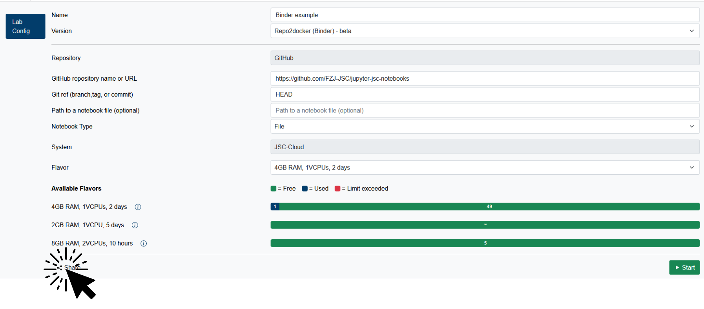
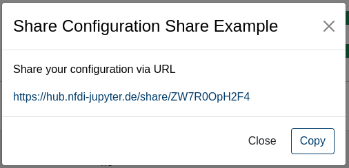
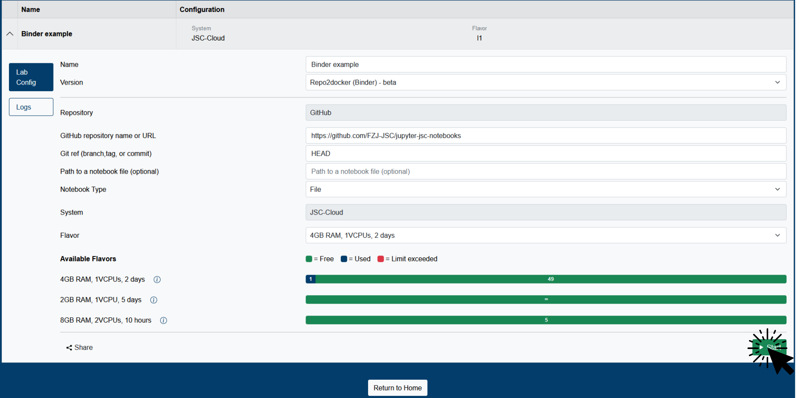

Useful Tips & Tricks
Share Button
In Jupyter4NFDI you can share your current configuration with your colleagues. In combination with the CustomDockerImage or Repo2Docker (Binder) services, it allows you to easily create FAIR digital objects.
Create share link
- Click on the share button in the bottom left corner of your configuration.

- That's it. You can copy it and share it with your colleagues.

Use a share link
-
Follow the link.
If you're not already authenticated, you have to log in first. For more information check this section. Afterwards you'll be forwarded to the desired destination.
-
You will see the shared configuration. Click on Start to start the service.

Markdown Tips & Tricks
For more insights and examples, check out the notebook: Markdown Tips & Tricks Notebook.